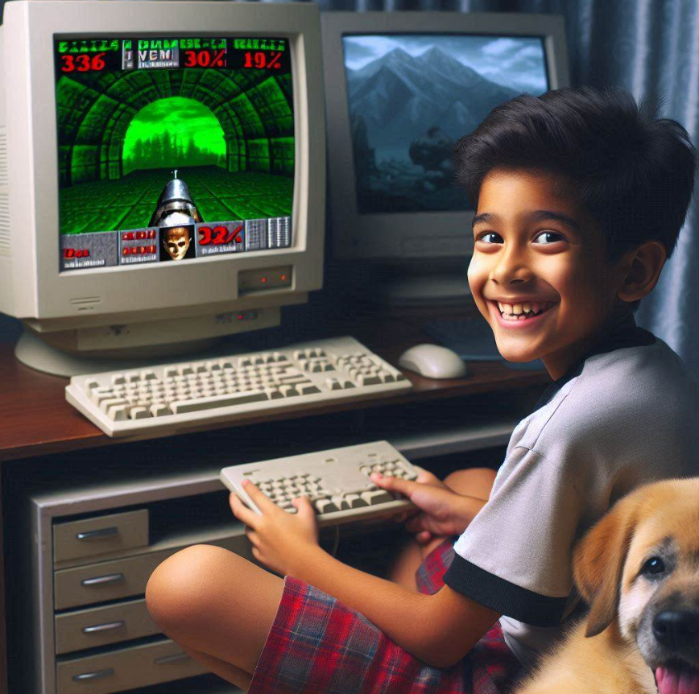
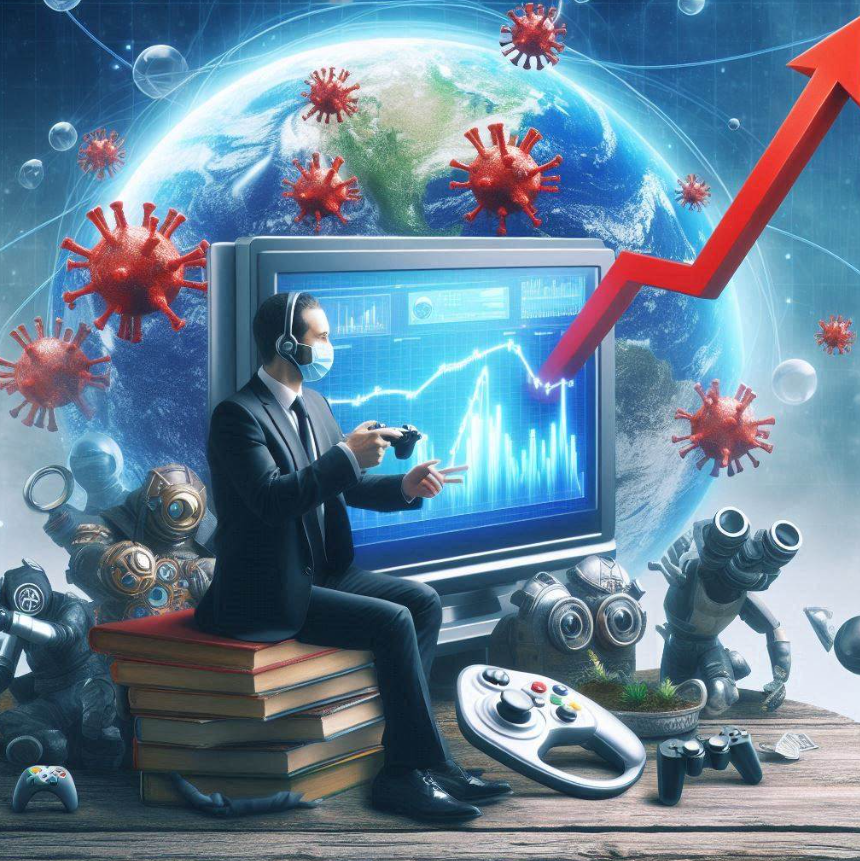
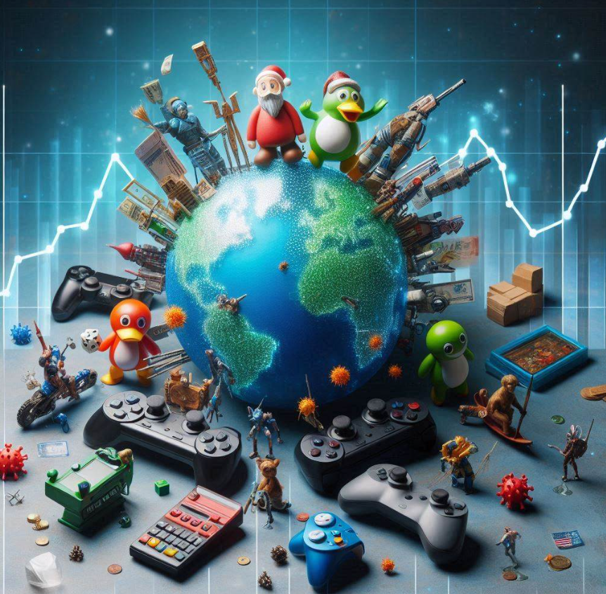
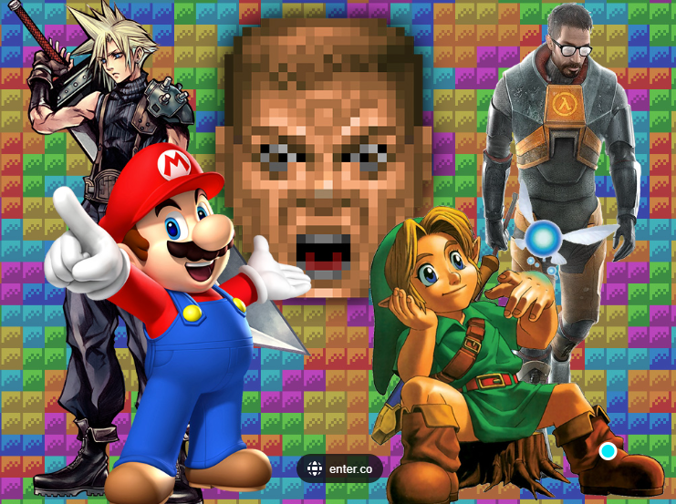
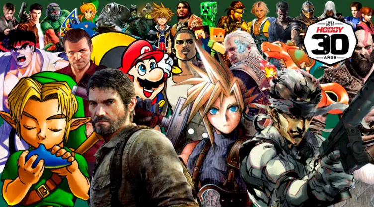
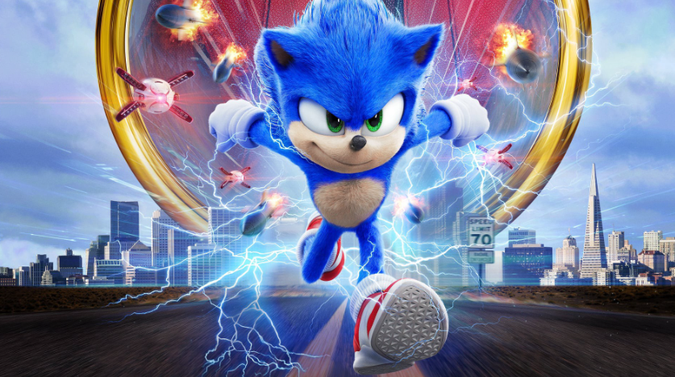
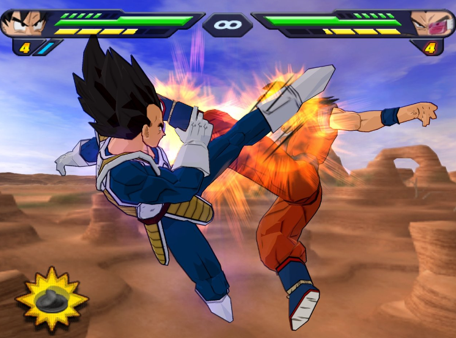
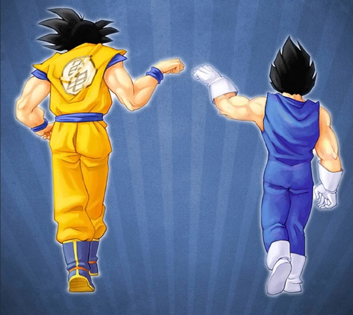

ANALISIS Y APRESIACION DE VIDEOJUEGOS
LINEA DE TIEMPO DE LOS VIDEOJUEGOS

1952 - PRIMER VIDEOJUEGO
◦ La creación del primer videojuego tiene muchas atribuciones, una de ellas es por William Higinbotham, quién fue un físico estadounidense el cual desempeño un papel importante en la creación de la Bomba atómica, este logro correr tennis for two en un osciloscopio, el cual es un medidor de corriente.
1961 Naves
◦ El científico y programador Steve Russell el cual
creó el lenguaje de programación lips para IBM
creó el primer videojuego de combate espacial.
◦ Es importante aclarar que estos videojuego ya
tenían colliders aunque no como un programador
actual lo utilizaría en Unity o en Unrreal, se utilizó
una estrategia por coincidencia de puntos, como
cuando un punto coincide con otro en un plano
cartesiano, en estos puntos de coincidencia se
cambiaba el dato a negativo y esto daba el efecto de
collider.
1972 – NACIMIENTO DE LAS LAS CONSOLAS Y ARCADES
◦ El ingeniero Ralph Baer el cual desarrolló su interés por la
electrónica poco después de participar en la guerra
estadounidense cuando su familia huía de Alemania antes de la
segunda guerra mundial, creó la primera consola de videojuegos
llamada Magnavox Odyssey, ésta ya contaba con mandos, se lanzó
con el videojuego Simon Says (Simón dice).
◦ Como dato curioso un año antes la universidad de
Stanford instalo la primera máquina arcade en el área de descanso,
la cual dio los inicios de los salones creativos.
1990 Doom
Se lanza el primer video juego 3D en primera persona ,el cual se ejecutaba en un computador con sistema operativo DOS, este video juego llamado Doom lanzado por id software, no solo innovo con videojuego 3D, también incorporo en la industria el juego multijugador online
2000 – ERA DE LAS CONSOLAS DE LA PROXIMA GENERACION
◦ Lanzamiento de Ps2 y su gran variedad de
videojuegos en DVD.
◦ Lanzamiento de Xbox aunque no tuvo el
mismo éxito que la ps2 centro las bases
para sus futuras consolas.
◦ Nintendo lanzo la consola portátil Game
Boy Advance la cual se convirtió un éxito
instantáneo en el 2001.
◦ Nintendo lanzo la consola portátil Game
Boy Advance la cual se convirtió un éxito
instantáneo en el 2001.
◦ Nintendo lanza la consola GameCube la
cual era una consola de videojuegos
familiar, esta no tubo gran éxito pero dejo
una impresión duradera.
2001- 2010
◦ Gran Theft Auto III uno de los juegos que mejor planteo la
temática de mundo abierto.
◦ Residen Evil 4 define el surrival horror con gráficos avanzados
para su época en el 2005
◦ Minecraft, se convierte en pionero permitiendo a los jugadores
construir y explorar mundos infinitos en el 2010
2020
◦ Durante la pandemia, los videojuegos han experimentado un aumento significativo en su popularidad y han transformado la forma en que las personas interactúan socialmente. Un estudio realizado por investigadores de la Universidad Jorge Tadeo Lozano en Colombia y de la Universidad Católica del Perú examinó el impacto de los videojuegos como medio de comunicación y socialización.
2022
◦ Metaverso se convierte en un término popular, presentando la convergencia entre mundos virtuales y la realidad, con experiencias digitales con gafas VR o AR Este término se refiere a un espacio digital compartido donde las personas pueden interactuar, trabajar, jugar y socializar en mundos virtuales.
ELEMENTOS NARRATIVOS
Concepto
El concepto es la idea central detrás del juego. Define el mundo, la premisa y la mecánica básica. Por ejemplo, en “The Legend of Zelda”, el concepto es la aventura de un héroe en un mundo de fantasía.
Personajes
Los personajes son las figuras que interactúan en el juego. Pueden ser jugables o no jugables. Desarrollar personajes interesantes y bien definidos es crucial para una buena narrativa.
Trama
La trama es la secuencia de eventos que ocurren en el juego. Incluye misiones, objetivos y giros argumentales. Por ejemplo, en “Red Dead Redemption 2”, la trama sigue la historia de Arthur Morgan y su banda de forajidos.
Conflictos
Los conflictos generan tensión y desafío. Pueden ser conflictos internos (luchas personales) o externos (batallas contra enemigos). Los conflictos dan sentido a la narrativa.
Resolución
La resolución es cómo se cierran los conflictos. Puede ser un final feliz o trágico. En “Mass Effect”, las decisiones del jugador afectan la resolución de la historia
Narrativa
La narrativa es la forma en que se presenta la historia al jugador. Puede ser a través de cinemáticas, diálogos, documentos en el juego o incluso la exploración del mundo.
Jugabilidad
La jugabilidad es cómo el jugador interactúa con el juego. La narrativa debe integrarse de manera fluida con la jugabilidad para mantener el interés del jugador.